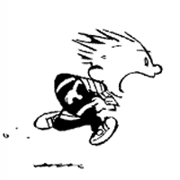

Engagement
Roll overTap a picture for more info.
December 13, 2014: On a chilly afternoon, Tom pulled into the parking lot at Lucky's Coffee Shop in Wilmington, eager to meet the independent, thoughtful, and yes, pretty girl he had been emailing for the last week and a half. Sara found him on eHarmony and sent an ice breaker. Tom was thrilled that someone who seemed like such a good match would email him, and he couldn't wait to finally meet this charming young woman. After lunch, Sara asked if Tom wanted to go down the street to Barnes & Noble, and of course the answer was a resounding "Yes!"
(Back to the pictures)A week later, Tom invited Sara up to Philadelphia to browse some of the fantastic indoor and outdoor Christmas markets in Center City. The two had lunch at Love Park's Christmas Village - nothing like bratwurst, pretzels, and baked cheese to stave off the cool air! - then headed a few blocks over to the Franklin Flea market for some indoor browsing. The main event, though, was a trip to the Delaware River for the Blue Cross RiverRink Winterfest: food, blankets, fire pits, hot cider, and s'mores, all conspiring for a romantic evening that neither Tom nor Sara wanted to end!
(Back to the pictures)June 13, 2015: To celebrate six months of dating, Tom planned a special Saturday trip to New York City. After a quick drive and train ride, Tom and Sara grabbed lunch at Battery Park and headed uptown to Broadway, where they saw an amazing performance of Les Misérables. Sara, ever the musical fan, could have sung along with every song; Tom, for his part, had never been to a Broadway performance before and soaked it all in. After the show, they went back to Lower Manhattan to Tom's favorite restaurant in New York: Fraunces Tavern, the oldest standing building in Manhattan. Here Gen. George Washington gave his farewell address to the troops before embarking on a victory tour of the former Colonies. Miraculously, Tom surprised Sara with a bouquet of six roses at their table, one for each month they'd been together.
(Back to the pictures)August 2, 2015: Unbeknownst to Sara, Tom had picked up her ring earlier that week, before they drove down to Chesapeake, VA so Tom could fill in with the Calvary Quartet, a gospel quartet he traveled with for several years when he lived in South Carolina. The weekend was a blast for both of them, and as they drove back home that afternoon, Tom put on a song ("I Could Not Ask for More" by Edwin McCain) and told her why he loved her and why he could never ask for anything more, not just because he was completely happy with her, but because no one else had anything left to offer that she didn't. Though Tom didn't wake up that morning planning to propose that day, the timing was just perfect. He pulled off the road into the parking lot of a Holiday Inn Express in Harrington, DE, and there in the front seat of the car, he proposed...and she said yes!
(Back to the pictures)December 30, 2015: One year, two weeks, and three days after that chilly afternoon in Wilmington, Sara and Tom will come together once more in Wilmington, this time to be married. December 13, 2014 was their last "first date." December 30, 2015 will be the start of a new life together.
To all our family and friends both near and abroad, thank you for your love, support, and prayers as we start this exciting new chapter in our lives!
--Sara and Tom
(Back to the pictures)In Their Words
Tom, on Sara:
Sara has turned her intelligence, curiosity, and creativity into a career researching and writing articles. With her love of history, literature, and the arts, we've created so many memories attending concerts, visiting museums, and exploring the beautiful outdoors around her hometown of Wilmington. We both love traveling off the beaten path and look forward to making more memories all over the world. Sara brings out the best in me, and I'm thrilled to spend the rest of my life with this amazing woman.

Sara, on Tom:
Tom is a talented web developer who loves geeking out on all things web design and computer. He is an avid Philly sports fan who enjoys playing recreational football on the weekends. He shares his musical gifts on the worship team at church and I especially love hearing his beautiful tenor voice serenading me in the car. Tom is a kind, patient man who makes every day an adventure. We look forward to sharing our mutual love of history, the arts, and travel in the years together as husband and wife.